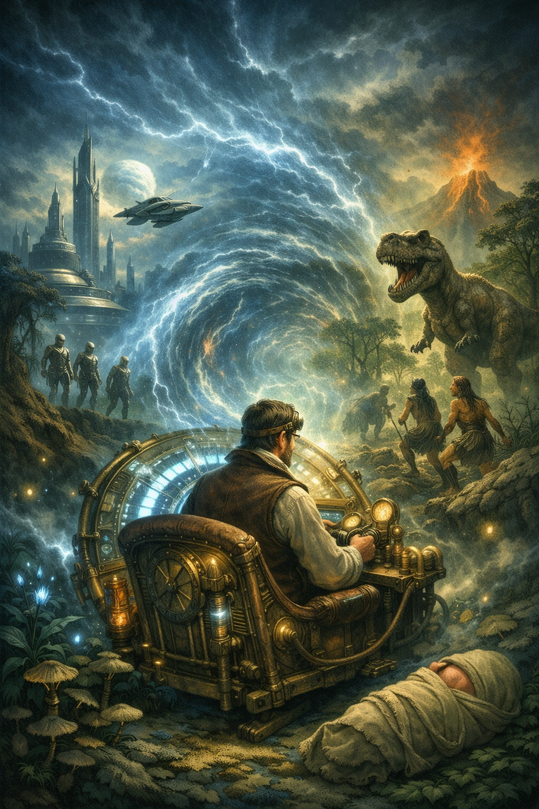

THE TIME MACHINE
The Time Traveller launched himself into the distant future, arriving in a world that appears to be a paradise. On the surface, he encounters the Eloi, a race of small humans, and the Morlocks, ape-like, light-sensitive creatures, who live underground. The Morlocks stole the Traveller's Time Machine and after a battle with the Morlocks, the Traveller escapes and travels even further forward in time and witnesses the final days of Earth.
Php 300.00